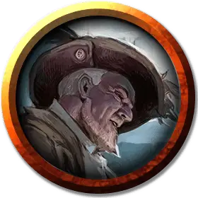

Капитан пиратов
Pirate Captain
Средний Гуманоид (Любая раса), любое мировоззрение

Класс Доспеха 14 (проклёпанный доспех)
Хиты 45 (7к8 + 14)
Скорость 30 футов
| мод | спас | ||
|---|---|---|---|
| СИЛ | 16 | +3 | +3 |
| ЛОВ | 14 | +2 | +2 |
| ТЕЛ | 14 | +2 | +2 |
| мод | спас | ||
|---|---|---|---|
| ИНТ | 11 | +0 | +0 |
| МДР | 10 | +0 | +0 |
| ХАР | 14 | +2 | +2 |
Навыки Атлетика +5, Запугивание +4
Чувства пассивное Восприятие 10
Опасность 2 (450 опыта)
Бонус мастерства +2
Особенности
Языки. Капитан знает один любой язык, обычно Общий.
Морская качка. Капитан с преимуществом совершает проверки характеристик и спасброски, чтобы не быть сбитым с ног.
Действия
Мультиатака. Капитан совершает две атаки: одну Ручным арбалетом и одну Длинным мечом.
Ручной арбалет. . Дальнобойная атака оружием: +4 к попаданию, дистанция 30/120 футов, одна цель. Попадание: 5 (1к6 + 2) колющего урона.
Длинный меч. . Рукопашная атака оружием: +5 к попаданию, досягаемость 5 футов, одна цель. Попадание: 9 (1к8 + 5) рубящего урона или 10 (1к10 + 5) рубящего урона, если используется двумя руками.
Реакции
Соберись, собака (2/день). Всякий раз, когда дружественное существо в пределах 30 футов от капитана, которое может его слышать, промахивается атакой, капитан может выкрикнуть ему несколько угроз, что позволяет этому существу повторно совершить бросок атаки.
Описание
Капитаны пиратов проводят свою жизнь в море, зарабатывая и удерживая командование кровью и отвагой. Впечатляющая работа капитана с мечом и язвительные слова вселяют в команду корабля как уверенность, так и страх. Сигурд "Змеиные Глаза" - капитан пиратов, который возглавляет банду контрабандистов в "Зловещей Тайне Солтмарша".